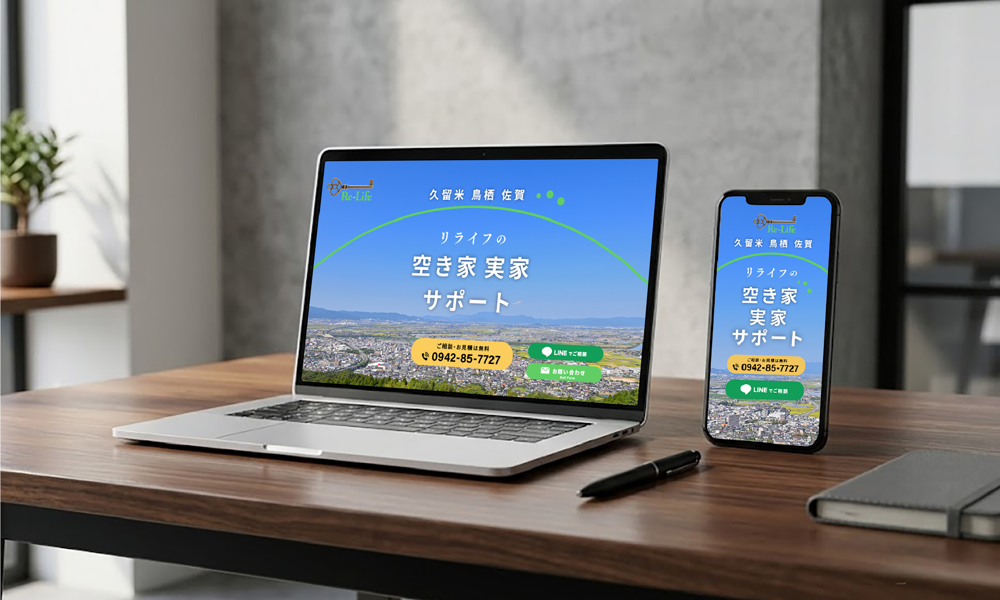
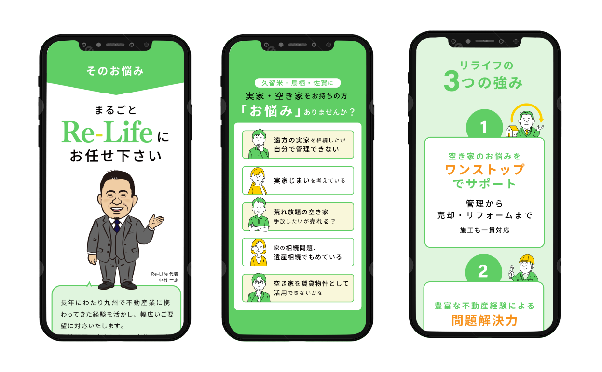
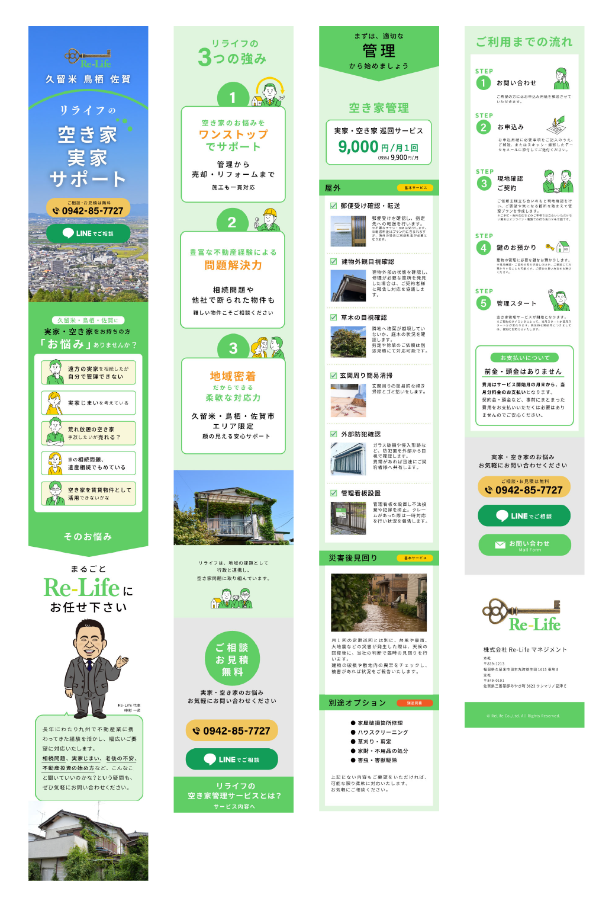

← BACK TO WORKS
空き家管理サービス
GRAPHIC
ランディングページ

空き家管理を主な事業とする不動産会社のサービスを紹介するランディングページのデザインを担当。構成、デザイン、ライティング、イラストまで、コーディング以外を作成しました。親しみやすさ、わかりやすさ、清潔感、信頼感をが伝わるようデザインしました。


- Project
- リライフマネジメント株式会社
- Category
- ランディングページ
- works
- LPデザイン・ディレクション、コンテンツ設計、ライティング、イラスト作成
- 制作
- 2026年6月
空き家管理サービスLP http://le-life.jp/lp/